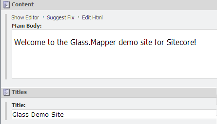
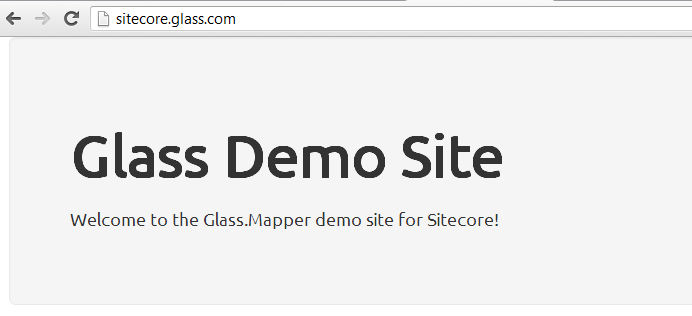

In this tutorial we will create a simple home page with a title and rich text content.
The home page item is very simple at the moment and only contains two fields:
First we need to create the model that will represent our home page item:
This class is very simple class but notice that the properties use the keyword virtual. We will explain why this is needed later but it shouldn't affect your code.
For this demo we are going to use the fluent configuration however if you prefer you can use attribute configuration. The code below shows how you can configure the two fields, by default Glass.Mapper will use the name of the property as the field name, however if for some reason the property name is different to the field name you can specify the field name to use.
Now we have configuration need to tell Glass.Mapper to load it, we do this in the Application_Start method of the Global.asax page.
The first line creates a new Glass.Mapper context and we pass it a configuration file. Don't worry about the config file for now, the default one will work for us at the moment. The next line makes Glass.Mapper load our homepage.
Now that we have everything configured for Glass.Mapper we can turn our attention to the home page sublayout. In the code behind we place the following code:
Here you can see that we have created an instance of SitecoreContext, this gives you access to the current Sitecore context via Glass.Mapper. The second line then loads the current context item into the HomePage class.
Finally we have the HTML output:
Hit F5 and load the homepage and you should see the two fields rendered to screen:
That ends the first tutorial, you have seen how to configure a simple class with fields and render them to screen.